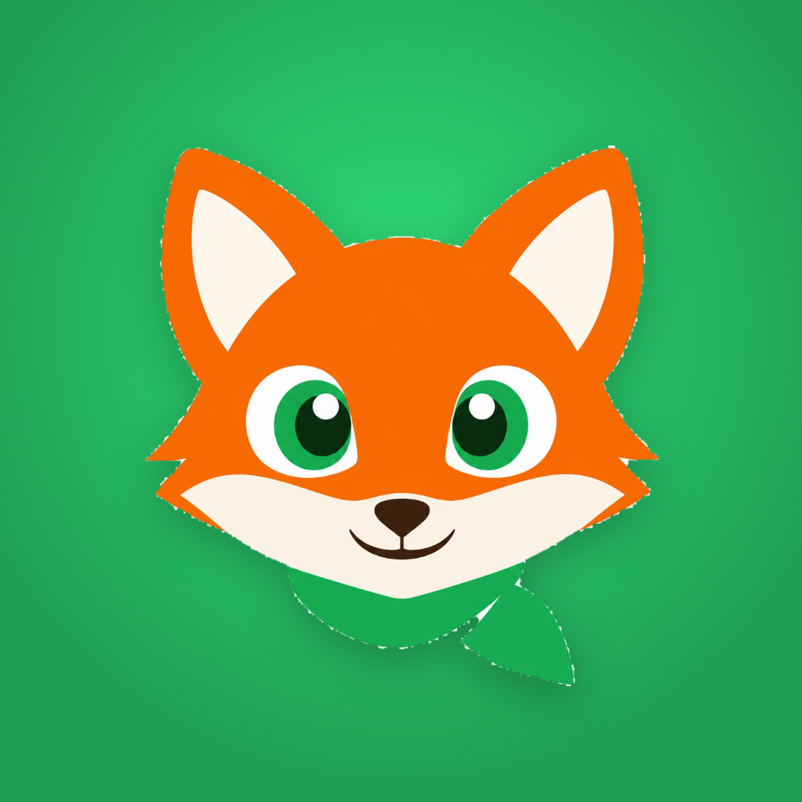

Logonun çevresinde logo yüksekliğinin yarısı kadar boşluk kalır. 1080 tuvalde logo yüksekliği 44 px, en az 40 px.

Instagram ve TikTok'ta düz tilki, yeşil zemin (profil-instagram-whatsapp.png). 110 px'lik dairede 3D tilkiden daha net okunur; WhatsApp profiliyle aynı yüz olur, güven verir.
Logo dosyaları: maskot/marka/ ve tasarim/varliklar/.